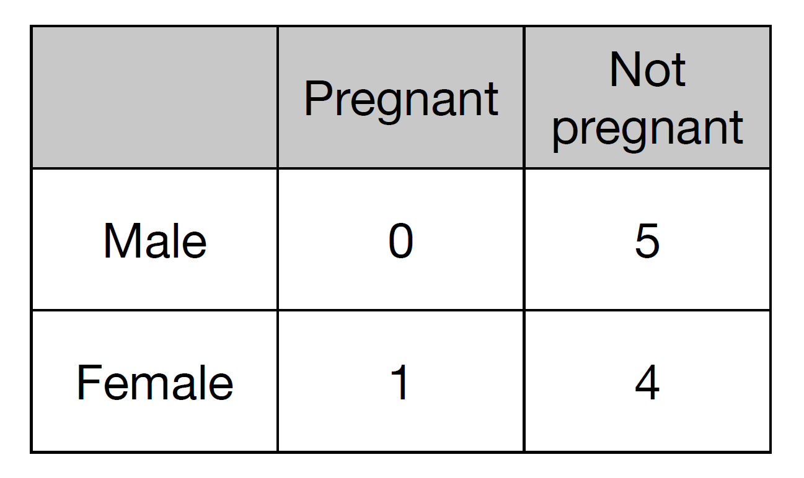
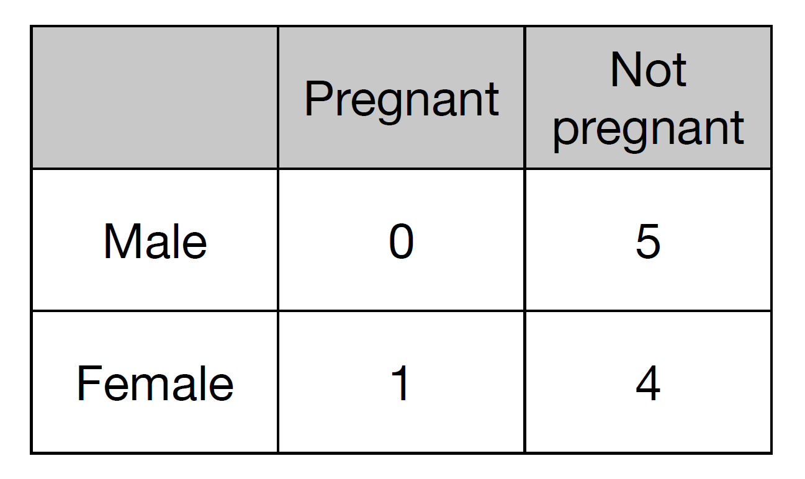
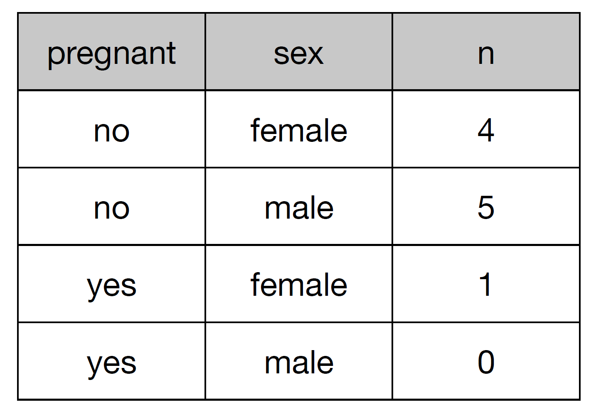

How many variables are represented in this table? What are they?

Andrew Do


Messy data is any other arrangement of data.
Just like with wrangling, we can formalize a good amount of the most common tidying actions in a few verbs:
| Tidying verb | Description |
|---|---|
| gather | Take columns and collapse into key-value pairs |
| spread | Take key-value pair and lay it over multiple columns |
| separate | Turn a single character column into multiple columns |
| unite | Turn multiple character columns into one |
Gathering the keys A and B into a single column called Treatment and their values into a column Blood_Pressure:
## names A B
## 1 John 121 166
## 2 Mary 110 145
## 3 Sue 130 141
gather(data = df, key = Treatment, value = Blood_Pressure, A, B)
## names Treatment Blood_Pressure
## 1 John A 121
## 2 Mary A 110
## 3 Sue A 130
## 4 John B 166
## 5 Mary B 145
## 6 Sue B 141
Gathering the key-value pair Treatment and Blood_Pressure across multiple columns:
## names Treatment Blood_Pressure
## 1 John A 121
## 2 Mary A 110
## 3 Sue A 130
## 4 John B 166
## 5 Mary B 145
## 6 Sue B 141
spread(data = df, key = Treatment, value = Blood_Pressure)
## names A B
## 1 John 121 166
## 2 Mary 110 145
## 3 Sue 130 141
Separating x into first and second, which were separated by "."
## x y
## 1 <NA> 1
## 2 a.b 2
## 3 a.d 3
## 4 b.c 4
separate(data = df, col = x, into = c("first", "second"), sep = "\\.")
## first second y
## 1 <NA> <NA> 1
## 2 a b 2
## 3 a d 3
## 4 b c 4
data folder for lesson 10library(readr)
df <- read_tsv("../data/pew.txt")
Using gather from tidyr, we can fix this data. Notice that the - means "don't gather this column".
longdf <- gather(df, key = income, value = n, -religion)
head(longdf, 5)
## Source: local data frame [5 x 3]
##
## religion income n
## <chr> <chr> <int>
## 1 Agnostic <$10k 27
## 2 Atheist <$10k 12
## 3 Buddhist <$10k 27
## 4 Catholic <$10k 418
## 5 Don<U+0092>t know/refused <$10k 15
df <- read_csv("../data/tb.csv") %>%
select(-new_sp)
names(df) <- str_replace(names(df), "new_sp_", "")
f=female and 1524=15-24.Some things you might want to think about:
gather)separatem and f to male and female (mutate)age more readable, e.g. "04" should be "0-4" (mutate)age_ranges <- c("04" = "0-4", "514" = "5-14", "014" = "0-14",
"1524" = "15-24", "2534" = "25-34", "3544" = "35-44",
"4554" = "45-54", "5564" = "55-64", "65" = "65+",
"u" = "unknown")
gender_values <- c("m" = "male", "f" = "female")
tidydf <- gather(df, gender, n, -iso2, -year) %>%
separate(gender, c("gender", "age"), 1) %>%
mutate(age = str_replace_all(age, age_ranges),
gender = str_replace_all(gender, gender_values)) %>%
na.omit
df <- read_tsv("../data/weather.txt")
tmin = minimum temperatureid = weather station identifierIs the data tidy? If not, then what needs to be done?
tidydf <- df %>%
gather(day, temperature, -id, -year, -month, -element) %>%
mutate(day = str_replace(day, "d", ""),
element = str_to_lower(element)) %>%
select(id, year, month, day, element, temperature) %>%
mutate(day = as.integer(day),
temperature = as.numeric(str_replace_all(temperature, "(.*)(.)$", "\\1\\.\\2"))) %>%
na.omit
df <- read_csv("../data/billboard.csv")
tidydf <- df %>%
gather(Week, Rank, -year, -artist.inverted, -track, -time, -genre,
-date.entered, - date.peaked)
Do you notice anything undesirable about this "tidy" form?
Each fact about a song is repeated many many times. Sign that multiple types of experimental unit stored in the same table. We can store our data more efficiently by separating it into different tables for each type of unit.
Need to separate out into song and rank tables.
Rankings <- tidydf %>%
select(-Week, -Rank, -date.entered, -date.peaked) %>%
unique %>%
mutate(Song_ID = row_number())
For a complete discussion on tidy data, please read the following paper: